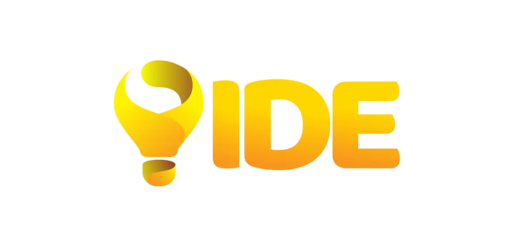
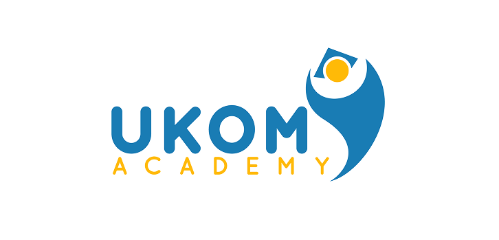
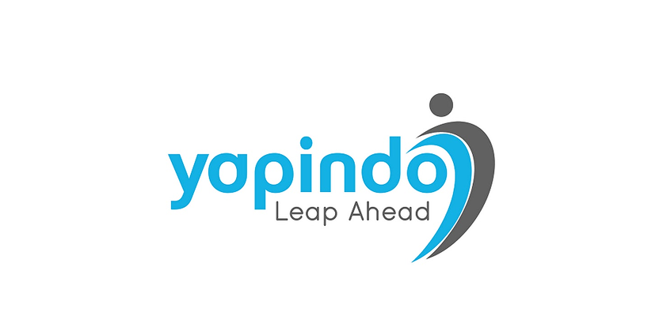
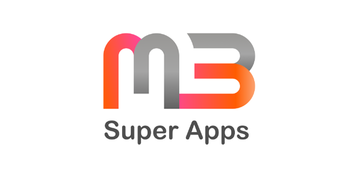
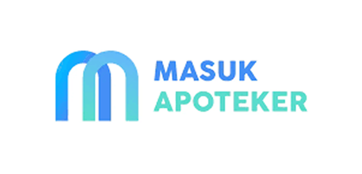

Platform Belajar Super untuk Mahasiswa Ekonomi & Bisnis. Belajar lebih smart, efisien
Testimoni dari Sobat Simbus yang telah lolos UTBK-SNBT di PTN Impian.

UKOM Academy hadir sebagai pusat pembelajaran dan pelatihan untuk mahasiswa Profesi dan Vokasi

Yapindo merupakan perusahaan penerbit di Indonesia yang berfokus menerbitkan buku-buku edukatif dan inspiratif

platform pembelajaran medis yang dirancang untuk mempermudah mahasiswa kedokteran
Platform digital pembelajaran dan pelatihan uji kompetensi (ukom) dengan fitur bimbel dan aplikasi latihan soal
Wadah kolaboratif yang inspirasi dan memfasilitasi pertumbuhan akademik, inovasi, serta pengabdian masyarakat

Platform pembelajaran digital untuk persiapan menghadapi Seleksi Kemampuan Dasar

Solusi Cerdas Biar Kamu Siap Hadapi Ujian Masuk PSPA